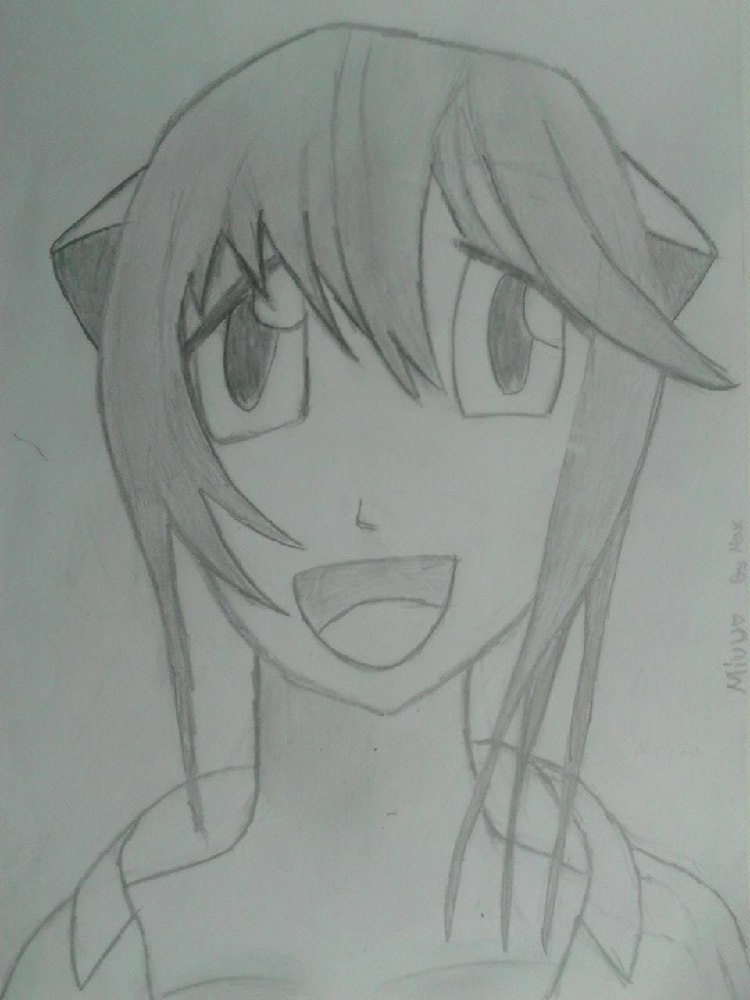

.
Meine Homepage
Über mich
-Name: Maximilian Arlt
-Gebrtsdatum: 16.03.1999
-Geschlecht: Männlich
-Land: Deutschland
-Interessen: Computer (Gaming), Zeichnen (Mangas),
-Land: Deutschland
Moin ,
mein Name ist Maximilian Arlt, ich bin 14 Jahre alt
und komme aus dem Rande Berlins.
Ich gehe zurzeit auf die Gesamtschule mit GOST Petershagen
und bin in der neunten Klasse.
Meine Interessen sind unternderem das Zeichenen von Magas
sowie Comuterspiele und sonst so alles mögliche
Projekte
PACMAN - Clone
(in Bearbeitung)
Zeichnungen (Manga)
1. Myuu (Lucy) aus Elfenlied
